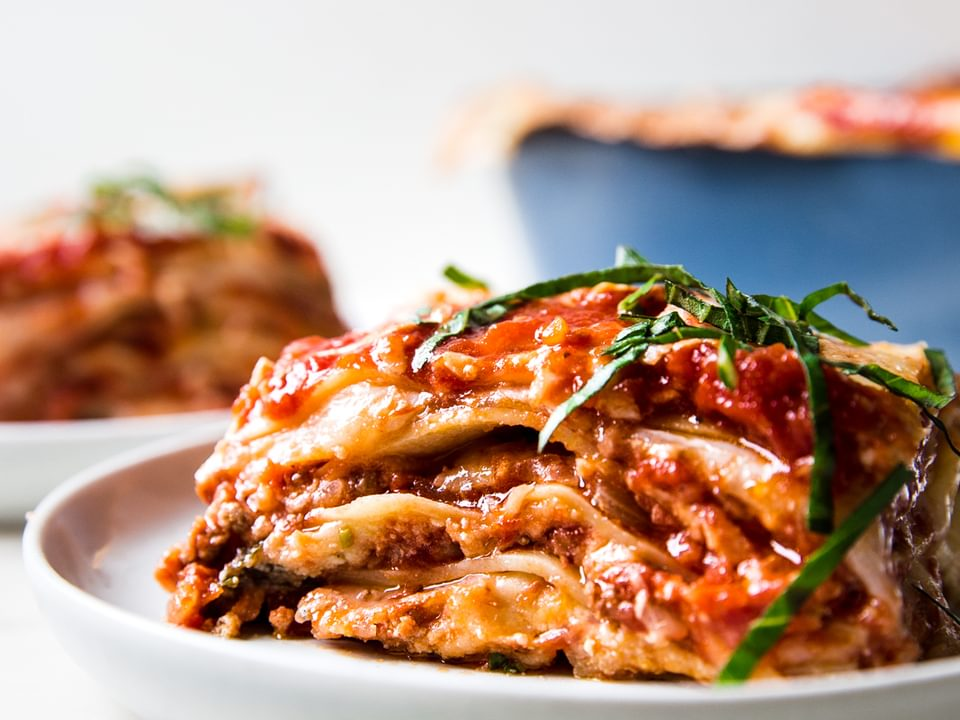

Classic Lasagna Recipe

Ingredients
- 12 lasagna noodles
- 1 pound ground beef
- 2 onion, chopped
- 2 cloves garlic, minced
- 2 cans (15 ounces each) tomato sauce
- 1 can (15 ounces) diced tomatoes
- 2 tablespoons tomato paste
- 2 teaspoons sugar
- 1 teaspoon dried basil leaves
- 1 teaspoon Italian seasoning
- 1/2 teaspoon salt
- 1/4 teaspoon black pepper
- 1 container (15 ounces) ricotta cheese
- 1/2 cup grated Parmesan cheese
- 1 egg, beaten
- 4 cups shredded mozzarella cheese
Instructions:
- Preheat oven to 375°F (190°C).
- Cook lasagna noodles according to package directions. Drain and set aside.
- In a large skillet, cook ground beef, onion, and garlic over medium heat until browned. Drain fat.
- Add tomato sauce, diced tomatoes, tomato paste, sugar, basil, Italian seasoning, salt, and pepper to the skillet. Simmer for 30 minutes, stirring occasionally.
- In a medium bowl, combine ricotta cheese, Parmesan cheese, and egg. Mix well.
- In a 9x13 inch baking dish, spread a thin layer of meat sauce. Layer with 4 lasagna noodles, 1/3 of the ricotta mixture, 1/3 of the mozzarella cheese, and 1/3 of the remaining meat sauce. Repeat layers twice.
- Cover with aluminum foil and bake for 25 minutes. Remove foil and bake an additional 25 minutes. Let stand for 10 minutes before serving.